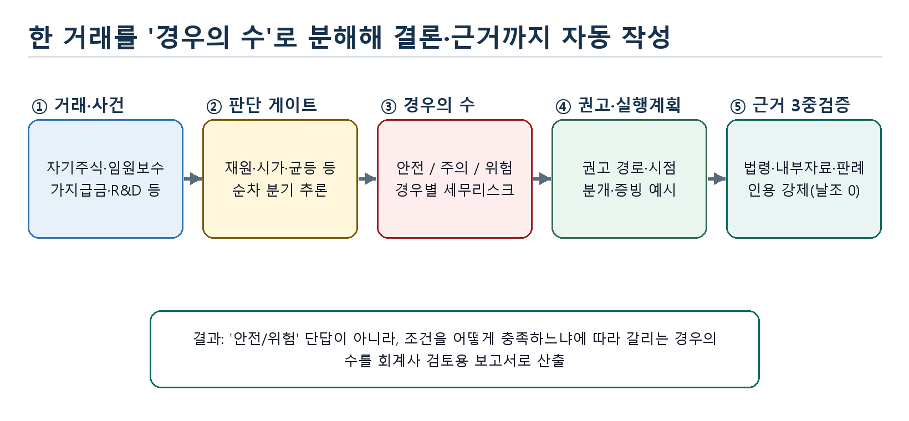
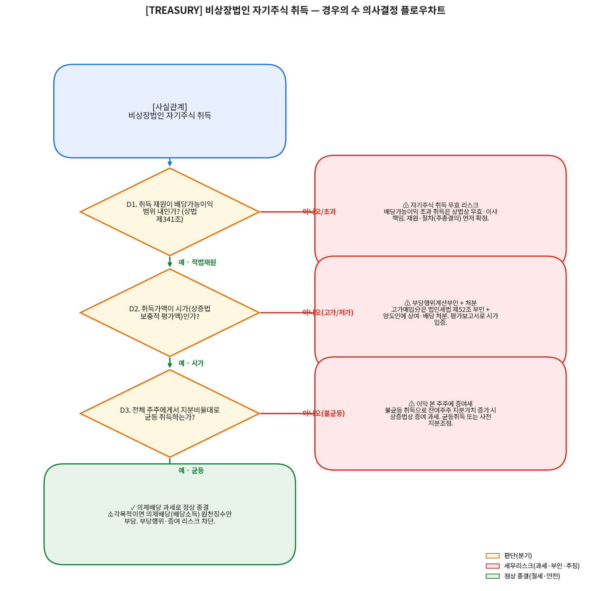
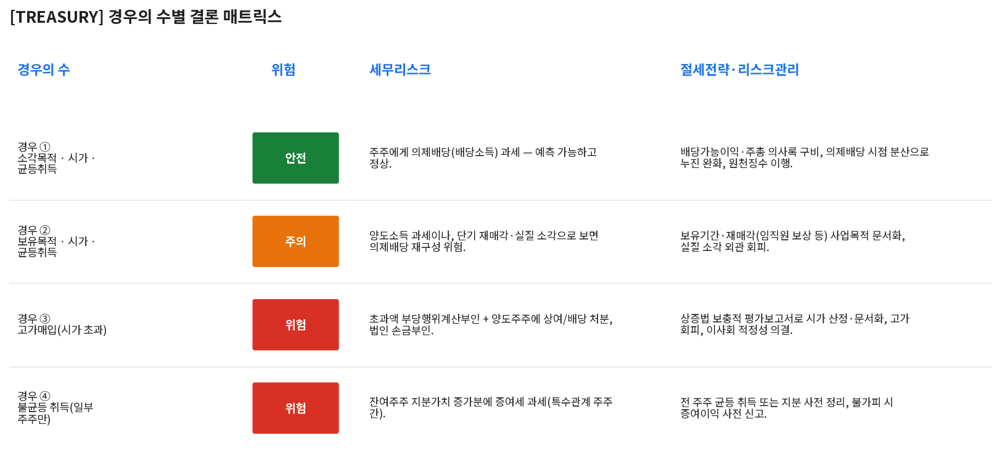
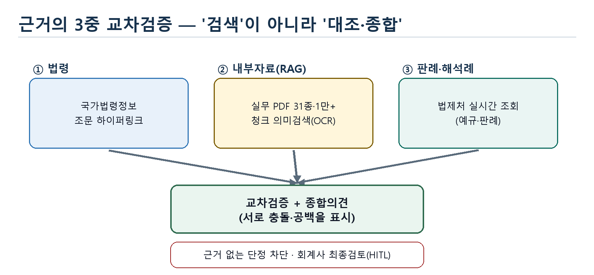

하나의 거래를 판단 게이트로 분해해 ‘경우의 수(안전·주의·위험)’와 경우별 세무리스크·절세전략을, 법령·내부자료·판례 근거와 함께 회계사 검토용 보고서(DOCX)로 자동 작성합니다. 답을 대신 내주는 도구가 아니라, 최종 판단과 서명은 회계사가 하는 검토 보조 시스템입니다.
※ 라이브 인테이크는 백엔드(python -m web.backend.run) 실행 시 동작합니다. 정적 데모는 브라우저만으로 동작합니다.
실무 세무 판단은 몇 개의 핵심 조건을 어떻게 충족하느냐에 따라 결과가 갈리는 ‘경우의 수’ 문제입니다. 이 시스템은 거래를 순차 분기로 분해해, 결론에 이른 논리를 그대로 노출합니다.
LLM의 단일 답변은 ‘왜 그런가’를 추적하기 어렵고, 근거가 비어도 그럴듯하게 단정합니다. 세무 자문에서 근거 없는 단정은 곧 추징 위험입니다.
거래를 판단 게이트로 분해하고, 분기마다 ① 빗나갔을 때의 세무리스크와 ② 통과시키기 위한 절세전략·증빙·시점을 함께 제시합니다. 모든 결론에 근거 인용을 강제합니다.
거래 입력에서 근거 검증까지 5단계 파이프라인. 각 단계가 보고서의 한 섹션으로 그대로 산출됩니다.

동일 렌더링 엔진으로 (A) 일반 데모 케이스와 (B) DART 실재무 그라운딩 케이스를 생성합니다. 시나리오 형식은 완전히 동일하며, 실재무 케이스에는 회사개요·종합세무검토·증빙 부록이 더해집니다. 아래 두 케이스(3~4개 쟁점)는 표준 형식을 보여주는 예시일 뿐이며, 실제 시스템은 라이브 인테이크로 임의의 세무거래를 검토합니다(근거 부족분은 law.go.kr API·판례/예규/세무질의 웹리서치로 보강).
가상 회사 기준 3개 거래 — 비상장 자기주식 취득 · 임원 보수/퇴직금 · 대표이사 가지급금 정리. 교육·검토용 표준 형식.
금융감독원 전자공시(DART) 실제 재무수치를 단서로 잠재 세무쟁점을 도출, 위 3개 거래 + 연구·인력개발 세액공제까지 4개 쟁점을 다룹니다.


단일 출처에 의존하지 않습니다. 세 채널을 각각 회수해 교차검증하고, 서로 충돌하거나 비어 있는 부분을 그대로 표시합니다.

쟁점→조문 매핑과 조문 하이퍼링크로 원문을 즉시 확인합니다.
실무 PDF 31종(스캔본 OCR 포함)을 임베딩해 의미 유사도로 회수하고, ‘왜 회수됐는지·일치하는 부분’을 함께 검토합니다.
법제처(law.go.kr) 국가법령정보 API를 실시간 조회해 판례·예규·세무질의를 회수합니다. 내부 DB에 없는 거래도 이 웹리서치로 근거를 보강해 모든 세무거래를 검토합니다(실제 회수만 표시).
세무 AI는 틀리면 위험하므로, ‘답변’보다 ‘통제’를 먼저 설계했습니다.
결론·경우의 수에 근거(법령) 필드가 필수 — 미입력 시 검증 실패. 모델이 근거를 비우는 것을 구조적으로 차단합니다.
DART 실재무는 검증 가능한 실값으로, 분개·증빙·거래 사실관계는 ‘가상 예시(dummy)’로 표지·방법론에 명시합니다.
RAG·판례 조회가 불가하면 근거를 생략하고 정직하게 고지합니다. 없는 근거를 조작하지 않습니다.
키워드 기반 일치는 ‘회계사 확인 필요’로 표기해 기계 판정 과신을 막습니다.
전 산출물을 ‘인공지능 추론 초안’으로 명시하고, 최종 판단·서명은 회계사가 하는 것을 전제합니다.
동일 입력→동일 산출(오프라인 fixture), 품질은 pytest 회귀 테스트와 단계별 코드리뷰로 보증합니다.
코드 문법이 아니라, 각 기술이 어떤 세무 리스크를 줄이는 통제인지로 설계했습니다.